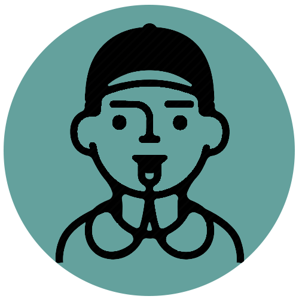

Paquete Completo de Kitesurf

Alquiler de Equipo
Todo el equipo incluido de marcas de alta calidad. Cometas, tablas, barras, arneses... ¡lo tenemos todo. También brindamos el equipo de seguridad.

Transporte
Ofrecemos servicio de pick-up y traslado desde donde se encuentre. Todo el viaje incluido, ya sea que esté haciendo un viaje downwind o manejando hacia una laguna.

Coaching Profesional
Entrenamiento 1-a-1 con atletas instructores profesionales. Aprenderá mucho de los kitesurfistas nacidos y criados con los vientos constantes de clase mundial de Jeri.